The web console
Everything about your apps, live, in a browser.
On this page
The console is at the server's console hostname: https://moorage.apps.example.com, or http://moorage.localhost:8080 on your own computer. Sign in with your account; moor server status shows the link that creates the first one.
Nearly everything in it is also available from moor or the API.
Getting started#
Claiming a server leads here, and Getting started in the sidebar comes back. It says how the server looks (its DNS and certificates, for an admin), what to install and how to sign in from your own computer, and how to deploy. It watches for your first deployment, and says when it is live.
Apps#
Every app: how it stands, its address, its release and its last deployment, changing as they do. New app asks for a name and a project, and says how to deploy it. Filter the list by typing part of a name. Each has a little line of its requests over the last hour.
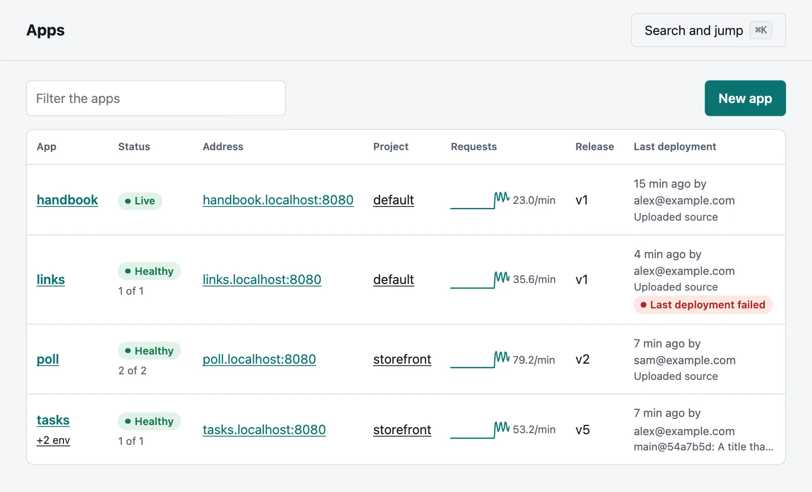
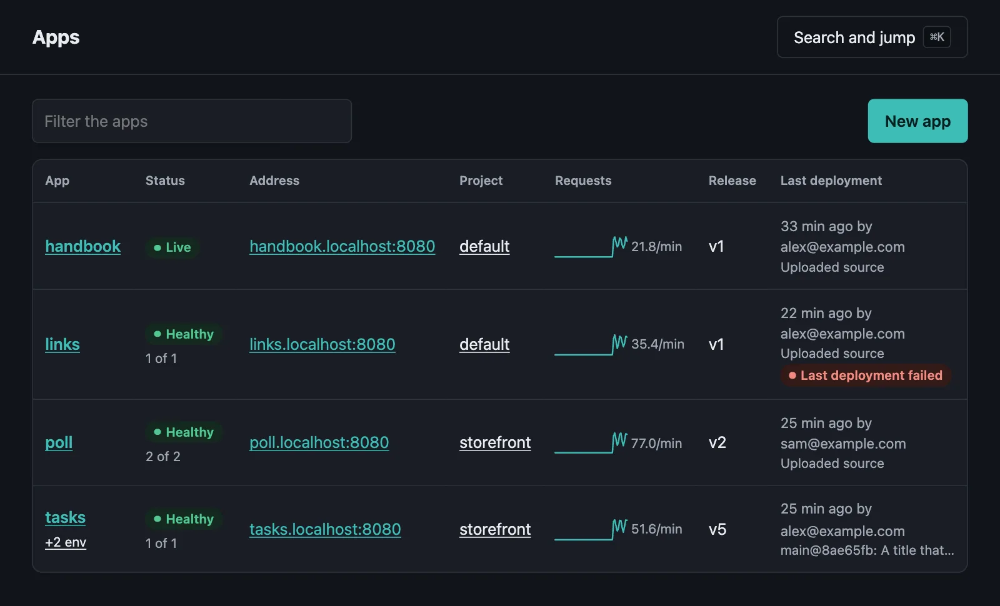
| Status | |
|---|---|
| Healthy | Every instance is healthy |
| 1 of 2 healthy | Some are not, and those that are get the traffic |
| Down | None is |
| Deploying | A deployment is under way |
| Live | A static site being served |
| Sleeping | Nothing used it for a while, so its instances are stopped, and the next request wakes it |
| Scaled to zero | It was asked to run no instances |
| Deploy failed | Its first deployment failed, so that nothing is served |
| Not deployed | It has never had a release |
A badge beside the status says if the latest deployment failed, while the release before it keeps serving.
An app#
Its page says what it serves and who deployed it, lists its instances with their health, restarts and last exit, and shows its latest deployments and activity. Instances and deployments change as they do. From here:
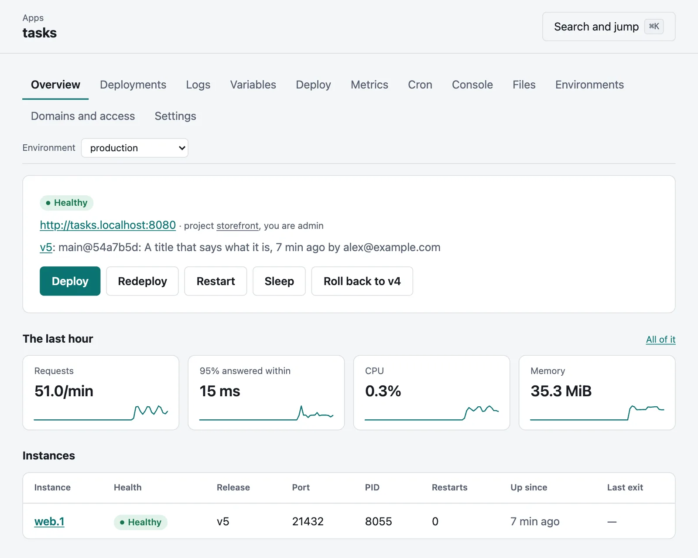
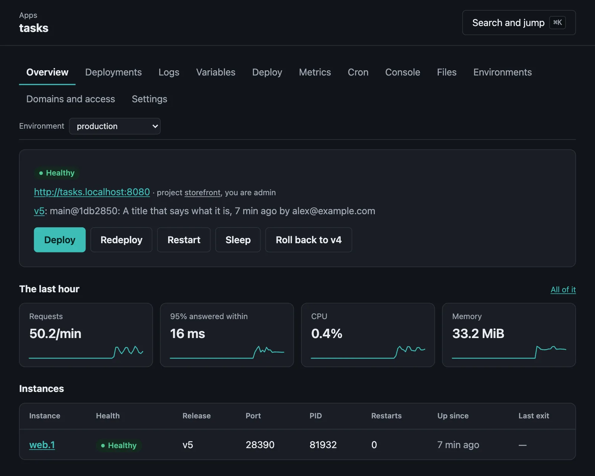
| Deploy | Says how: from its directory, with git push, or from the page, by uploading a .tar.gz of its source or naming an image. It goes to the deployment when one starts. | moor deploy |
| Redeploy | Builds again what the current release was built from: the same commit, upload or image name, for when a toolchain has moved, a tag points elsewhere or a build variable has changed. A release uploaded ready to run has nothing to build. | moor redeploy |
| Restart | Replaces the instances, without downtime, or those of one process. | moor restart [PROCESS] |
| Roll back | Serves the release before this one again, as a new release, in seconds. A deployment's page rolls back to that one, and can restore the variables it ran with. | moor rollback |
| Scale | Says how many instances of each process run. | moor scale |
| Sleep and Wake | Stops its instances until a request wakes it, and starts them again. | moor sleep, moor wake |
When an app has more than one environment, its pages have a choice of which one at the top, and everything on them is about that one.
An app's Settings are for maintainers: moving it to another project, renaming it, deleting it, and connecting a repository, which shows its pull requests and approves them.
- Renaming changes its address and git remote. Its instances stop and start again under the new name, so there is a moment of downtime. Change
[app].namein itsmoorage.tomland its git remote to match: a deploy by the old name makes a new app. - Deleting stops its instances and removes its variables, releases, builds, logs and repository, and its data directory unless you keep it. The page says how much each takes, and asks you to type its name.
moor apps rename shop storemoor apps delete shop --keep-dataScale on an app's page says how many instances of each process run. See Scaling.
Environments and previews#
An app's Environments tab lists where it runs: each with its status, address and release. From here you make an environment or a preview of a branch, Promote what one runs to production, Lock one against deployments, Pin a preview and Remove or Destroy what you no longer need.
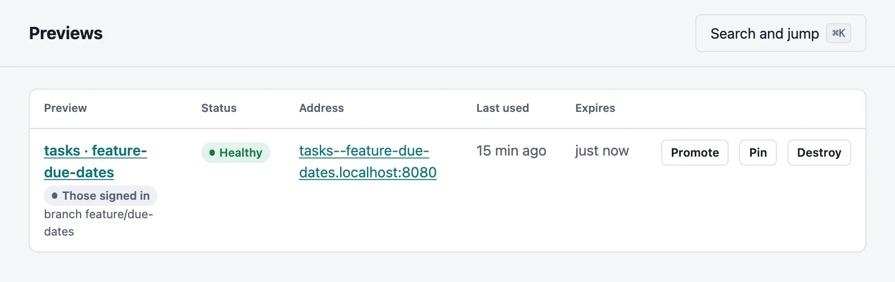
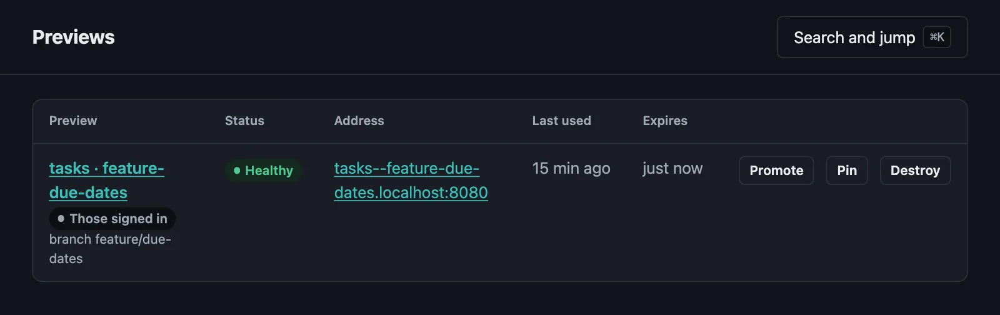
Previews in the sidebar has those of every app you can see, with when each was last used and when it expires.
Metrics#
An app's Metrics tab has charts of its requests, response times, CPU and memory, for the chosen environment, from the last few minutes to the last 30 days, with each release marked. The last hour on its page has them at a glance.
Cron#
An app's Cron tab lists its cron jobs, with their schedules, when each next runs and how it last went, and Run now does just that. Below them are its runs, each with what it said, and a box to run a command in the current release.
Domains and access#
An app's Domains and access tab has hostnames of your own for the chosen environment, with the DNS record each needs and whether it points here. It says who can reach the environment, and why, and for maintainers changes it: anyone, a password, those signed in, or only share links, and a list of addresses. Below it, deployers make and revoke share links, each shown only when it is made.
A deployment#
Its page shows how it is going, as it goes:


- Stages: prepare, toolchains, build, release and rollout, with how long each took, and those it did not need. A rollback needs no more than a rollout.
- The log, as it is written, with what went wrong if it failed.
- What changed since the release before it: whether the build did, the lines of the resolved manifest, and which variables were added, changed or removed. Of variables it shows the names, never their values.
- The resolved manifest: what
moor manifest explainsays, for this build.
moor releases show v3moor releases diff v3 v4Logs#
An app's Logs tab shows what it says, as it says it: the output of every instance, merged by time. You can narrow it down by instance, time, text and source, and pause, go further back or download it. See Logs.
Variables#
An app's Variables page lists what it runs with, and where each comes from: this environment, every environment, or the [env] of its moorage.toml, which a variable set here overrides. A secret is sealed when it is set, and is never shown again.
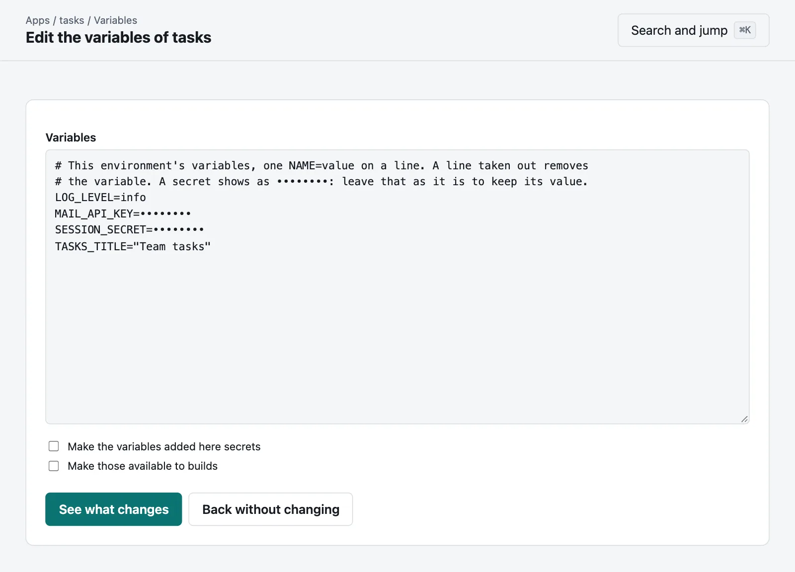
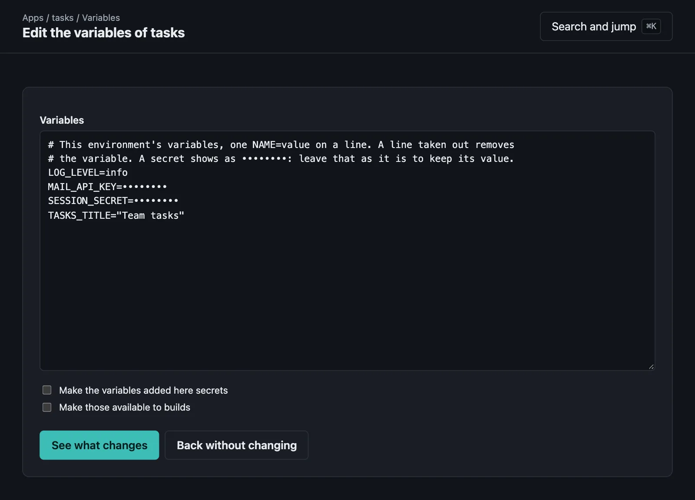
.env or changing many at once.Add a variable or Change one, and the change is released at once, as a new release that runs without downtime; or Save without releasing, and the page says what is waiting and offers to release it. A change to a variable available to builds reaches the app with its next build: Redeploy builds it now.
Edit as text has them all as NAME=value lines, for pasting a .env or changing many at once. Take a line out and the variable goes; a secret shows as ••••••••, which keeps its value if left. See what changes says what it would do before it does it.
Maintainers can Reveal a secret, which shows its value once, and is recorded.
moor env reveal STRIPE_KEYProjects#
Projects lists those you have a role in. A project's page has its apps and members, and for its maintainers who else may do what. The console shows you what your role allows: a viewer sees an app without its buttons, and nobody sees what they have no role in. See Projects and roles.
Your account#
Your name at the foot of the sidebar goes to your account: changing your password, which ends your other sessions; your SSH keys; your API tokens, each shown once, with what it can do, for which apps and until when; and your Sessions, to end one you no longer recognise.
moor passwordSettings#
For administrators.
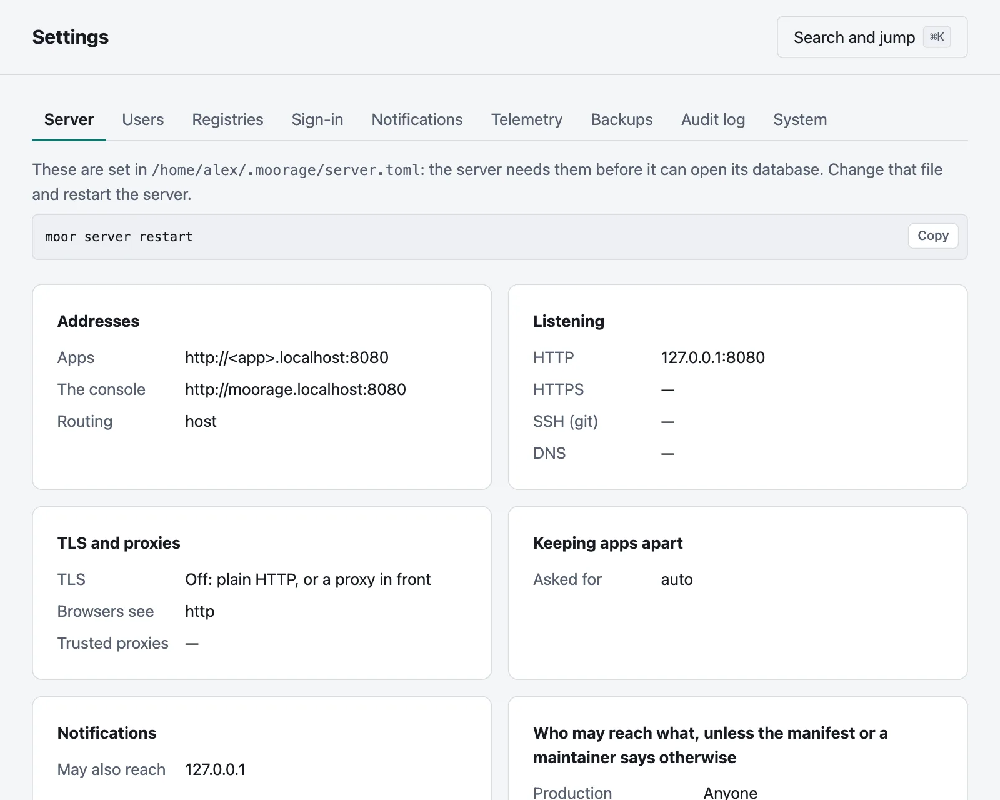
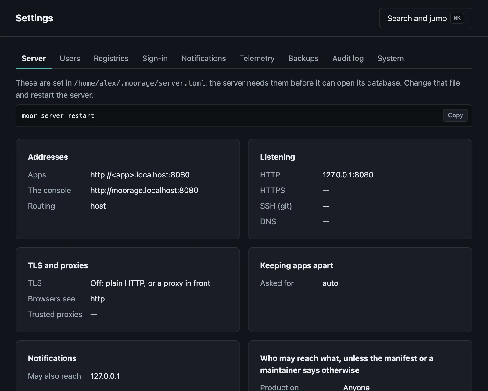
server.toml says.- Server: what
server.tomlsays. The server needs these before it can open its database, so they change in that file, and with a restart. - Users: add someone, and send them the link it makes: the server sends no email. Change a role, disable an account, or make a new link for someone who has lost their password.
- Registries: the credentials of private container registries, sealed.
- Sign-in: single sign-on with your identity provider.
- Backups: where they go and how often, what has been backed up, and a button to back up now.
- Notifications: channels, each with when it last sent something and why it failed if it did, a way to send it a test, and the rules that say what goes to it.
- Telemetry: sinks that logs and metrics go on to, each with when it last sent something.
- Audit log: who did what, to search and to download.
- System: what the server runs, and what
moor server doctorfinds, with how to fix it.
Notifications#
Notifications in the sidebar has what you have been told, with how many you have not read: a deployment of yours that failed and, in a project you maintain, one that failed, an app that keeps crashing or a cron job that failed. A project's page has the rules that send its news to a channel as well, for its maintainers.
Activity#
What happened, newest first, as it happens:
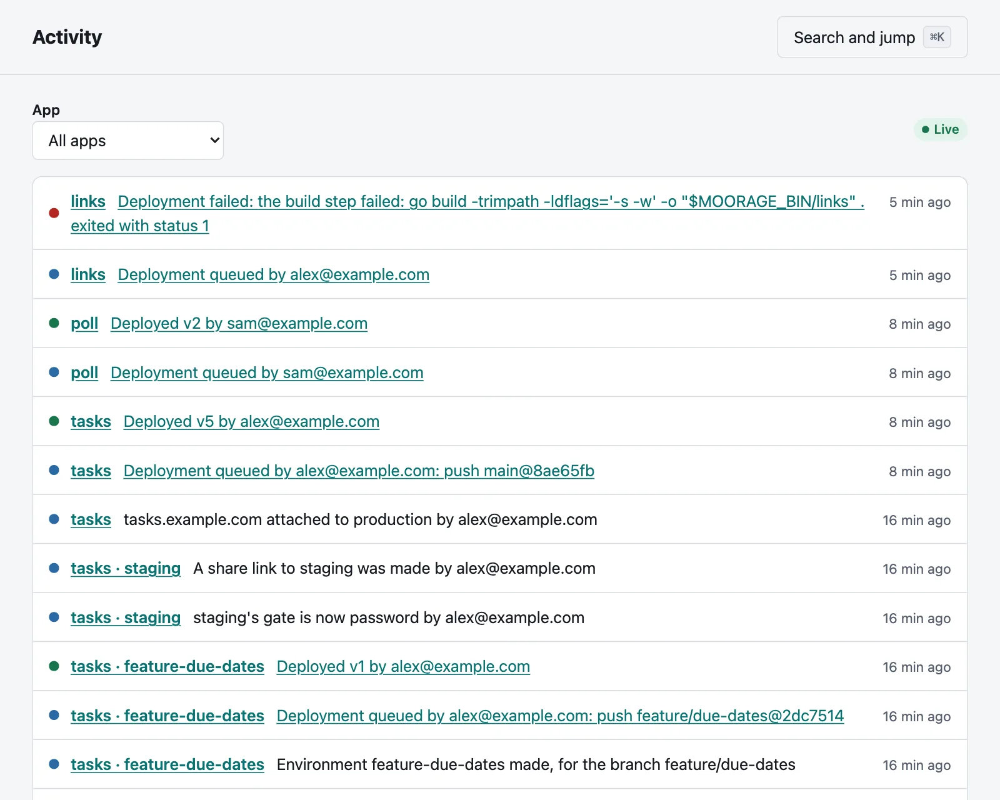
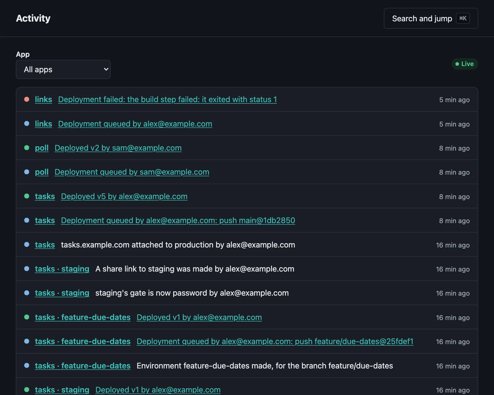
| Deployments | Queued, live, failed, superseded or canceled, and who by |
| Releases | A rollback, or a release for a change of variables |
| Variables | That they changed, and their names: never their values |
| Running | That it was restarted or scaled, and who by |
| Instances | That one exited and restarted, sickened, recovered or was replaced |
| The server | That it started, and which version |
Choose an app to see only its own. Events are kept for 90 days. From the command line:
moor events --app shop -n 20moor events -fThe API has them too: GET /api/v1/events, and GET /api/v1/events/stream to follow them as server-sent events.
Jumping around#
Press ⌘K (Ctrl+K elsewhere), or /, to find an app, a page or an action by typing a few of its letters. Arrow keys choose, and Enter goes.
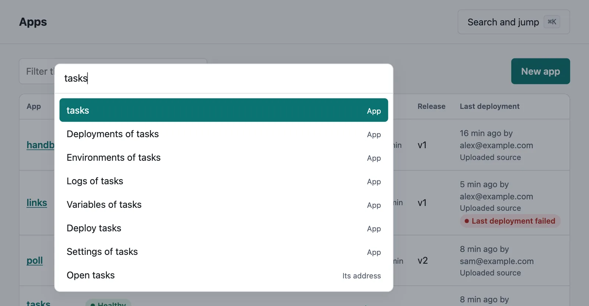
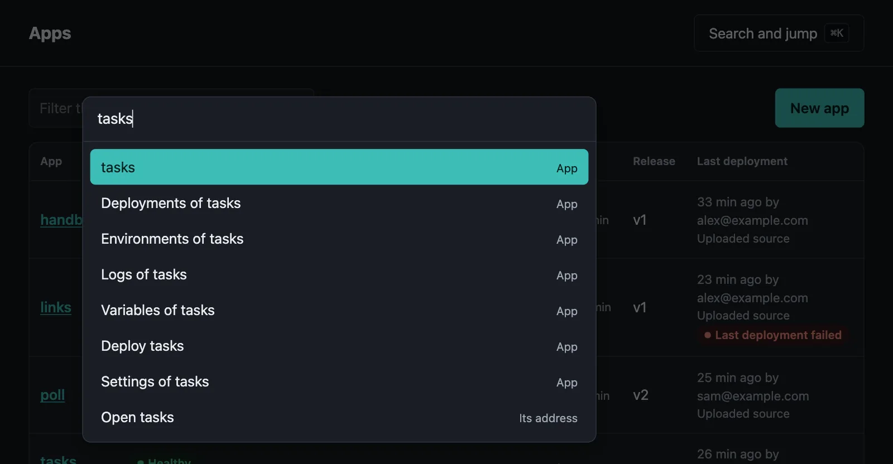
Themes#
The console follows your system's light or dark setting. Light and Dark at the foot of the sidebar override it, in this browser.
Without scripts#
Every page works as plain HTML, with forms and links; a deployment under way reloads itself every few seconds. Scripts add what happens by itself: live updates, jumping around, copy buttons and the choice of theme. Pages run under a strict Content-Security-Policy, with no inline scripts or styles.
Live updates#
A page follows the server over one connection, and a deployment's log over one more, and a page out of sight lets go of them, and catches up when it returns. Behind a proxy, the proxy must not buffer responses; moor server doctor --public-url checks that.
Working on the console#
From the top of a checkout, this reads the console's templates and assets from internal/console for each request, so that a change shows when you reload:
moor server run --dev